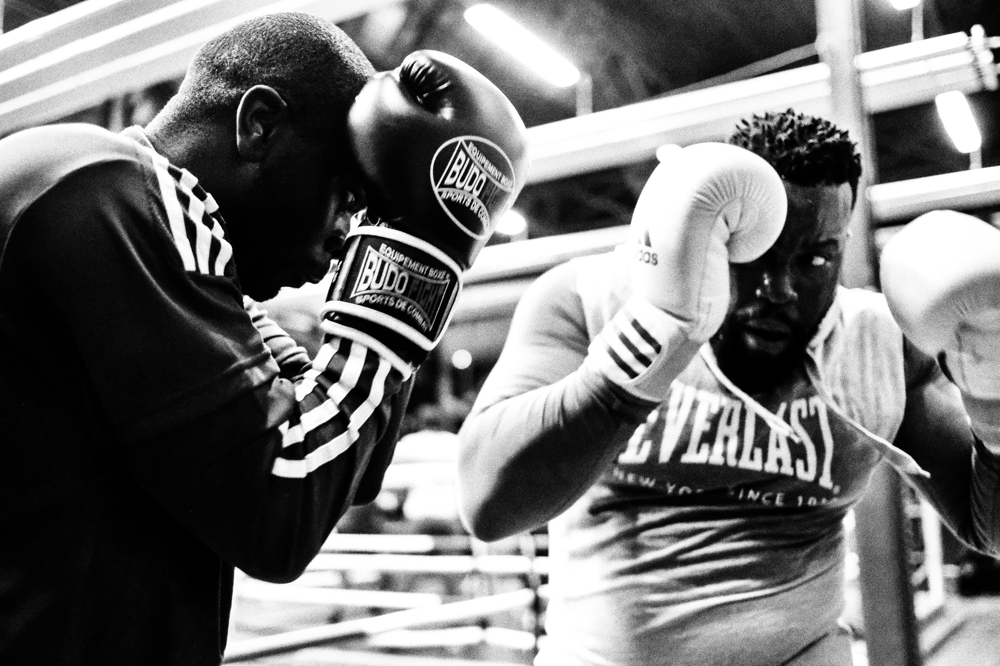

Quand on était jeune, on avait tous un ami qui aimait inventer de nouveaux jeux, mais ces jeux finissaient souvent sans but réel et sans règles formelles. De nos jours on peut avoir recours à une méthode plus moderne et cela est d’avoir recours à l’intelligence artificielle. En effet, elle est capable de créer de tout nouveau sport, ayant de toutes nouvelles règles et reprenant le concept de plusieurs sports existant.
C’est ce que l’agence AKQA se donna pour objectif, la création d’un sport issu des règles et des spécificités de près d’environ 400 sports déjà existants, ce qui correspond à près de 7300 règles individuelles possibles. L’agence a utilisé des algorithmes d'apprentissage en profondeur, des RNN générant du texte aux DCGAN générant des images, pour créer des idées pour chaque aspect de ce nouveau sport unique ; du gameplay, aux règles et même au logo. Ainsi, l’analyse de ces données a permis à l’intelligence artificielle de générer plus de 1000 sports différents, mais la plupart d’entre eux ne semblaient pas prendre en considération la sécurité de ses joueurs les rendant impraticables et donc dangereux .
Après avoir coupé drastiquement les différentes possibilités à seulement 3 : Speedgate est l’idée éventuellement gagnante et choisie par l’équipe américaine. Les règles sont basées sur le rugby, le basket et le volley et le logo fut aussi créé sur l’appui de près de 15000 logos déjà existant. Cette AI a aussi ajouté quelque règle intrigante qui contribue à l’esprit d’équipe ce qui est d’autant plus surprenant pour un sport créer artificiellement. Par exemple, si une équipe essaye de mentir sur le score et de se rajouter un point, elle sera pénalisée et un point sera donner à l’autre équipe tels que les règles mises en place le citent. Ainsi, il semble que le Ai de speedgate tient à l’honnêteté et au bon esprit sportif de ses joueurs. Un slogan fut même inventé par l’algorithme et l’équipe le garda même complètement intact. Ce projet témoigne du faite que même une intelligence artificielle peut faire partit du processus créatif lorsqu’il s’agit de trouver de nouvelles idées, dans ce cas-ci , trouver un sport ayant des règles assez claires pour le rendre tout de même agréable. D’autre part, si nous améliorons notre capacité physique grâce à la technologie cela ouvre alors la porte a un potentiel humain sportif encore plus grand.
Entrée par Yanis El Bachir Latrous
Référence : WHITWAW Ryan « Speedgate Is the First Sport Created By AI » dans le site EXTREMETECH [https://www.extremetech.com/extreme/289547-speedgate-is-the-first-sport-created-by-ai}(consulté le 12 novembre 2021)